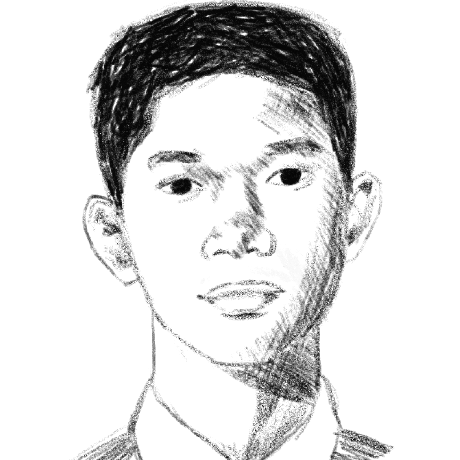
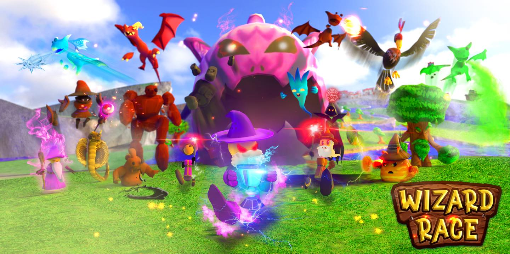
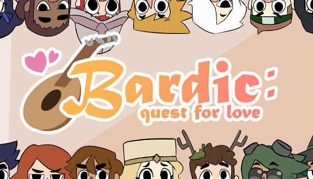
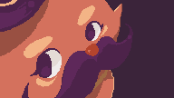
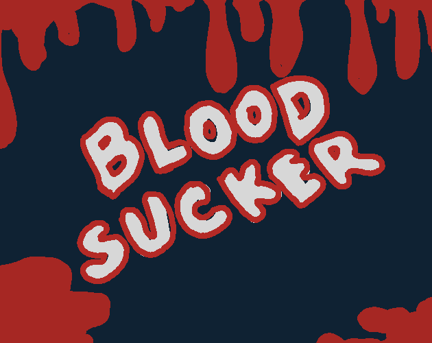

HowsYourDay
A self-hosted journaling server that analyzes emotional trends using a lightweight NLP pipeline.

Software Engineer
I'm a full-stack developer mainly working within the .NET ecosystem. I enjoy building web applications, working with APIs, and figuring out how things work behind the scenes.
Currently, I'm experimenting with different ways to make the most out of AI-assisted development without losing sight of the fundamentals of software engineering.
Always curious, always learning, and looking to become a better developer along the way.
I go by noitisoprepus online. It’s “superposition” spelled backward, a nod to the quantum physics concept where a system can exist in multiple states at once until measured. I've always found that idea fascinating.
P.S. It's also because two of my favorite songs happen to be called "Superposition" — one by Young the Giant and the other by Daniel Caesar. So yeah, it's partly science, partly music.
A quick look at where I’ve worked and what I’ve contributed.
I maintain their ERP product, suERP, built with C# and ASP.NET Core and have helped expand its functionality by implementing new modules.

I built frontend features and fixed UI issues for a dating app across its React web client and React Native mobile app.
(This was part of my undergraduate internship, which was capped at 250 hours.)
I developed gameplay features for Wizard Race, a 3D mobile platformer game made using Unity. I also helped integrate Azure PlayFab for its online features and helped bring the game to deployment.

Here’s what I’ve built and worked on, from software and web projects to games.
A self-hosted journaling server that analyzes emotional trends using a lightweight NLP pipeline.
A mobile app template for module-based learning with text-to-speech and voice commands.
A simple desktop GUI tool for creating modules to be used in ModuLearn.
A GNOME Shell extension to quickly switch between audio output devices from the top bar.
My undergraduate thesis project: A gamified AR application for learning primary level Geometry.
Where it started. Game development drew me in to the love of programming.

Contributed as one of the game designers in setting up scenes.

A whack-a-mole game I made in Unity in just72 hours for the Mini Jam 127.

A fast-paced action game I made in Godot in just 72 hours for the Mini Jam 118.